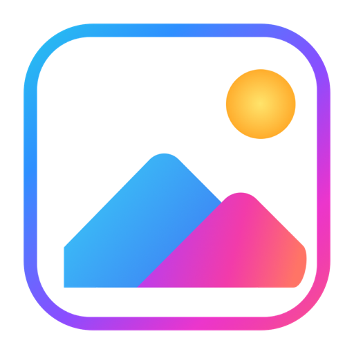

文件夹浏览
用工具栏或方向键，切换同一文件夹里的上一张、下一张。

LumaView
多图同看
想打开几张，就打开几张。每张图片都有独立窗口、缩放和浏览进度；多图并排时，不必反复切换。

日常看图

用工具栏或方向键，切换同一文件夹里的上一张、下一张。
适应窗口、缩放、平移与旋转，底部显示当前缩放比例。
支持 JPEG、PNG、HEIC、GIF、TIFF、WebP、PDF、RAW 和 Sketch 预览。
现在开始看图
macOS 13+ · Universal · 安装包约 2 MB